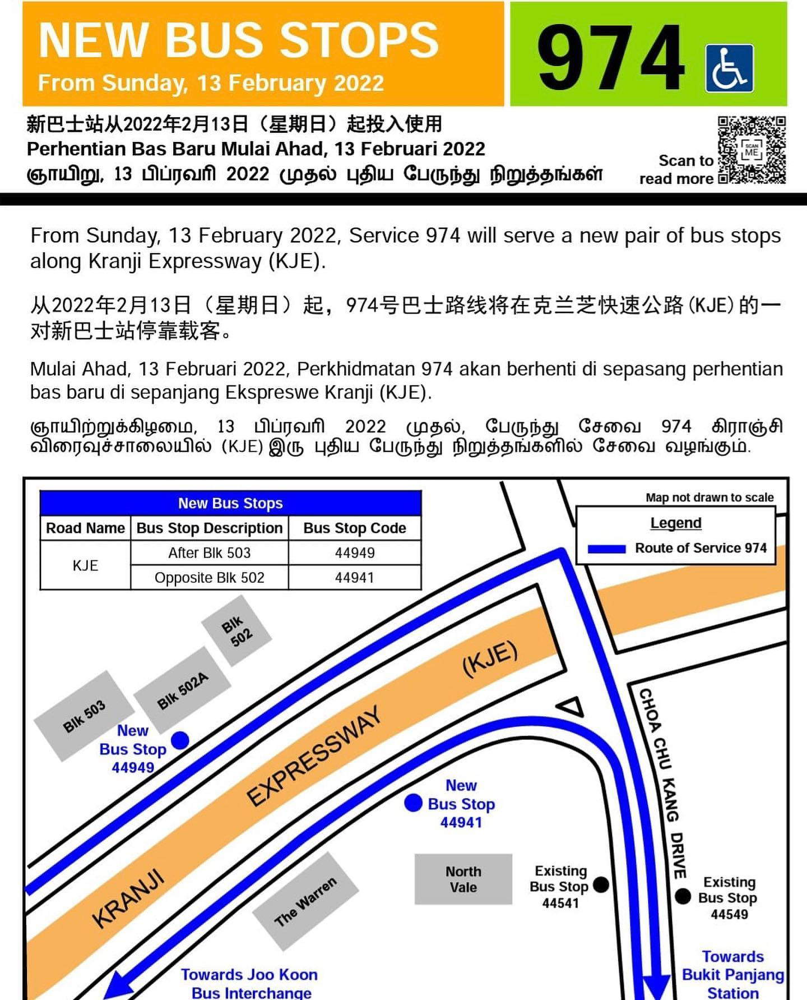
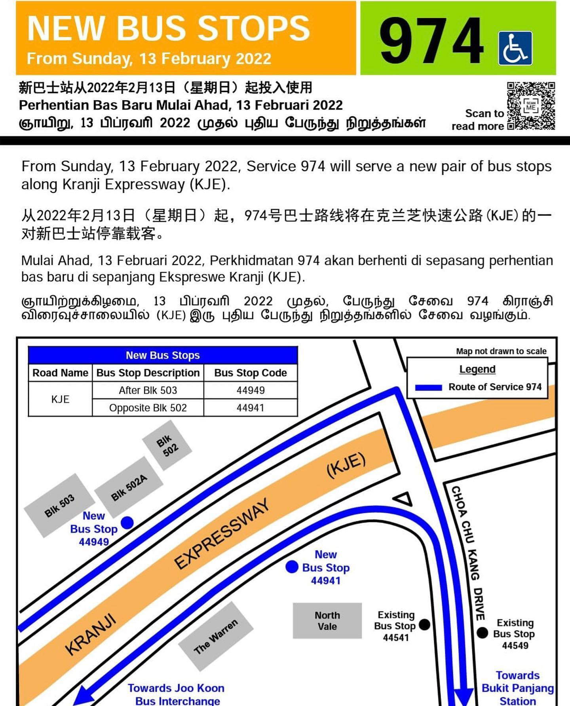

Lab Practice #1
Learning Objectives
In this lab exercise, you will learn the following:
- Create a new feature class
- Data editing
- Peforming spatial analysis using geoprocessing tools
Data required:
None
Case Study
Read the case study below.
 

In this lab, you will plot the location of the two new bus stops in a GIS dataset.
1.1 Adding a basemap
In this step you will create a new ArcGIS Pro and add a basemap.
-
Click the Start Menu, expand ArcGIS and click on ArcGIS Pro to launch the ArcGIS Pro client.
Tip
If a licence dialog box appears, alert one of the trainers to help you configure your ArcGIS Pro client to connect to LTA's on-premises licencing server.
-
Once ArcGIS Pro launches, under the middle column titled New, click on Map.
-
You will be prompted to enter a name for the new project. Enter
Lab1and click OK.Info
It will take a couple of minutes for ArcGIS Pro to create and open the project.
Tip
Take note of where your project will be stored under the Location field. By default, it will be stored at
C:\Users\<your WOG ID>\Documents\ArcGIS\Projects. You will need to navigate to this directory in File Explorer to access the data and files that you create.When you first open a new map in ArcGIS Pro, you will only see a blank canvas. You will need to first add a basemap, which will serve as the foundation for your maps and provide context for your work.
Using ArcGIS Pro in WOG machines
If you are using ArcGIS Pro from your WOG machine, do take note that you will not be able to access the basemaps provided by Esri due to firewall connectivity issues. You may however leverage on our in-house designed Ignite Colour basemap, which will be demonstrated in the following steps.
If you access ArcGIS Pro from your Internet machine or the Internet-enabled Workstations in the DLab, you can use the basemaps provided by Esri.
Next, we will add a basemap to your map.
-
Under the Map Tab and the Layer subgroup, click on the Add Data drop down menu.
- Select Data from Path.
- Enter the following path:
http://web.gdm1.sso1.lta.gov.sg/arcgis/rest/services/GDM/LTA_Basemap_Colour/MapServer - Leave all other settings as default and click Add. The basemap will be added to the Contents pane on the left.
- Right click on the layer and click on Zoom To Make Visible. The basemap shoudl appear on the map.
- Click on the Save icon at the top left or press
Ctrl + Sto save your project.
Accessing Ignite Colour basemap from Internet machine
If you are accessing ArcGIS Pro from an Internet machine, do use this URL instead: https://ignite.lta.gov.sg/arcgis/rest/services/Ignite_Basemap_Colour/MapServer
1.2 Creating a new feature class
Feature classes are homogeneous collections of common features, each having the same spatial representation (such as points, lines, or polygons) and a common set of attributes (for example, a line feature class for representing road centerlines). The four most commonly used feature classes are points, lines, polygons, and annotation.
In the illustration below, these feature classes are used to represent four datasets for the same area:
- Manhole cover locations as points
- Sewer lines
- Parcel polygons
- Street name annotation

Different feature class types can be used to represent different phenomena. Read the table below to learn more.
| Feature class type | Description |
|---|---|
| Points | Features that are too small to represent as lines or polygons as well as point locations (such as GPS observations). |
| Lines | Represent the shape and location of geographic objects, such as street centerlines and streams, too narrow to depict as areas. Lines are also used to represent features that have length but no area, such as contour lines and boundaries. |
| Polygons | A set of many-sided area features that represents the shape and location of homogeneous feature types such as states, counties, parcels, soil types, and land-use zones. |
| Annotation | Map text including properties for how the text is rendered. For example, in addition to the text string of each annotation, other properties are included such as the shape points for placing the text, its font and point size, and other display properties. Annotation can also be feature linked and can contain subclasses. |
| Multipatches | A 3D geometry used to represent the outer surface, or shell, of features that occupy a discrete area or volume in three-dimensional space. Multipatches comprise planar 3D rings and triangles that are used in combination to model a three-dimensional shell. You can use multipatches to represent anything from simple objects, such as spheres and cubes, to complex objects, such as iso-surfaces and buildings. |
In this step, you will create a feature class from an existing shapefile.
- Open the Catalog Pane (if it is not already open). It should be docked on the right side of the application.
- Click Folders in the Contents pane.
-
Expand
Lab1. That folder contains all the files in your ArcGIS Pro project.Tip
Before creating a Feature Class, you need to first create a geodatabase, which is essentially Esri's proprietary data format for storing feature classes. By default, a geodatabase named
Lab1.gdbshould have already been created for you. -
Right click
Lab1.gdband hover on New > Feature Class. - Under Name, enter
NewBusStop. -
Under Feature Class Type, select
Point. Click Finish.The
NewBusStopFeature Class will be added to your map.
What is the difference between a Feature class and a Shapefile?
When working with geospatial datasets, sometimes you might come across another common format known as the shapefile. It is a traditional Esri vector data storage format for storing the location, shape, and attributes of geographic features.
Shapefiles are made up of a combination of related files containing at least the .shp, .shx, .dbf, and .prj files components, and usually packaged into a .zip file for easy sharing. A feature class on the other hand must be stored inside a geodatabase which in turn comprises of hundreds of small files.
The shapefile is a format that is compatible with both ArcGIS products and open source GIS software such as QGIS. If you need to share GIS data with a colleague who does not have access to ArcGIS Pro, you should export it to a shapefile.
Read more about shapefiles here.
1.3 Move a feature to a specified location
Next, you will use the Editor tool in ArcGIS Pro to create a bus stop feature a specific lat-lon coordinate.
About the Move To tool
The Move To tool  moves selected features from the geometric center (centroid) of the selection set to a specified x,y,z location, an x,y,z distance from its current location, or a direction, 3D angular pitch, and distance. This tool is available in the Modify Features pane.
moves selected features from the geometric center (centroid) of the selection set to a specified x,y,z location, an x,y,z distance from its current location, or a direction, 3D angular pitch, and distance. This tool is available in the Modify Features pane.
- On the ribbon, click the Edit tab. In the Features group, click Create. The Create Features panel opens on the right.
- Click on the
NewBusStopfeature template. - Click anywhere within the boundary of Singapore to place a point.
- On the ribbon, click the Edit tab. In the Features group, click Modify
 .
. -
In the Modify Features pane, expand Alignment and click Move To
. -
In the tool pane, click the Select tool
 and select the point you've just created.
and select the point you've just created. -
In the Move To tool, under the Method section, choose Absolute and enter the following coordinates:
- Longitude: 103.7438077
- Latitude: 1.3884430
-
Repeat the previous five steps to add a point at this location:
- Longitude: 103.7440424
- Latitude: 1.3893283
-
Under the Edit Tab and Manage Edits Group, click on Save to save your edits.
Tip
If you are creating or digitising a large number of features, remember to click the Save button regularly to avoid losing your changes.
1.4 Adding a new field
Next, you will add a new field to the feature class to store the bus stop number for these bus stops.
A primer on fields
Fields are the components that provide structure for a table. Tables form the foundation of geographic data and are the fundamental building blocks of any data model. Tables are a collection of information, such as a list of building owners, employees, or customer information. Layers in a map, such as city streets, buildings, or address points, are essentially tables that include information about the geometry and location of those features.
- To open the fields view, first highlight the lamp post layer in the Contents pane. This displays the Feature Layer tabs.
- Clicking the Data tab, you will find the Data Design group containing the Fields, Subtypes, and Domains buttons. These are your tools for working with a data model.
-
Click the Fields button to open the fields view, which displays the layer's fields in a tabular arrangement.

Accessing the fields view
You may also access the fields view by opening the Attribute Table (right click the layer in the Contents Pane and click Attribute Table) and then right clicking any column in the Attribute Table and selecting Fields.
The Fields view allows you to manage the fields associated with a layer or table. As shown in the examples below, you can edit a layer's or table's fields, modify their properties, delete fields, or create fields using the Fields view.
| Example | Description |
|---|---|
| 1 | Change the name and alias of a field. |
| 2 | Delete unnecessary fields. |
| 3 | Add a new field called BLDGTYPE to store the type of campus building. |
| 4 | Apply a domain to a field. |
| 5 | Apply a default value to a field. |

- Click the last row to add a new field.
-
Enter the following properties to the new field:
- Field Name:
BUS_STOP_NUM - Alias:
Bus Stop No - Data Type:
Text
- Field Name:
-
Save your changes. On the Fields tab, in the Changes group, click Save.

-
Open the Attribute Table of the
NewBusStoplayer by right clicking the layer in the Contents pane and click Attribute Table.The Attribute Table opens at the bottom of the application.
-
Double click on a cell to add the Bus Stop number for both of the new features.
Tip
You may double click on a row in the Attribute Table to select and zoom to that particular feature.
Info
For more information on Creating and managing fields, refer to the documentation at https://pro.arcgis.com/en/pro-app/latest/help/data/geodatabases/overview/create-modify-and-delete-fields.htm.
1.5 Spatial Analysis
You want to see the spatial extent of this bus stop can improve connectivity for nearby residents. You can leverage on the buffer tool to do this.
- Under the Analysis Tab and Geoprocessing Group, click on Tools. The Geoprocessing panel appears at the right.
- Enter
Bufferin the Find Tool text field. - Click on the Buffer (Analysis Tools) tool.
- Under Input Features, select
NewBusStop - Under Distance, enter 400 meters.
- Leave all the other settings as it is and click on Run. Two buffer rings should be created around the two point features you've just created.
Tip
If you have selected any feature or highlighted any feature in the Attribute Table, the buffer tool (or any geoprocessing tool) will only perform the analysis on the selected features.
To apply the (buffer) tool on all the features in the feature class, go to the Edit Tab, under Selection group click on Clear. This will clear the existing selection of features.
Stretch goal
Instructions
Try completing the tasks below on your own. Should you need any help, refer to the instructions above, Google ArcGIS Pro followed by what you are trying to do, or consult a trainer.
You are given a shapefile LampPost_Practice_1.shp containing the location of lamp posts. You are tasked to perform the following:
- Convert the shapefile to a feature class
Tip
You may use the Feature Class to Feature Class geoprocessing tool (see below) to convert a shapefile to a feature class.
- Move LP No. 16 feature to the coordinate
1.30954262, 103.84757923. -
Add a new field with the following properties:
- Field Name:
LP_Installation_Date - Alias Name:
LP Installation Date - Data Type:
Date
- Field Name:
-
Using the field calculator, populate the field with the following dates based on their road name:
Road Installation Date Bukit Timah Rd 17/01/2022 Hampshire Rd 11/02/2022 Kampong Java Rd 09/03/2021 Race Course Rd 23/08/2021 Tekka Ln 11/11/2021 Hint
If there are any features selected, field calculator will only populate the field of those selected features. You can use the Select features by Attribute tool to select features of a particular road.
-
Using ModelBuilder, create a simple model that creates 5m Buffer Rings for all lamp post features.